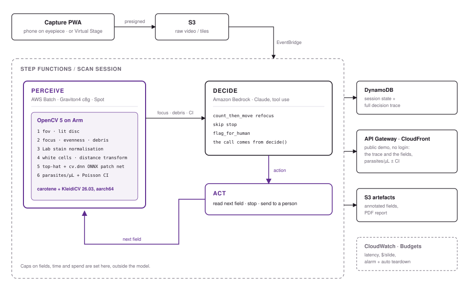
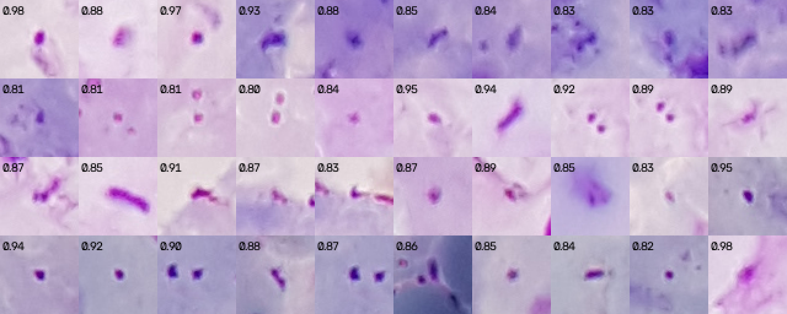

Malaria microscopy with an agent. An OpenCV 5 pipeline counts parasites and white cells on each thick-film field. An agent decides which field to read next and when to stop.
Live demo: d1k2o3z37c1maf.cloudfront.net
Every figure in this report is read from a committed result file by
docs/report/report_numbers.py.
Uriel Nguefack Yefou · Alex Bruno Kenfack Anafack
Team AutoScope · OpenCV AI Competition 2026, powered by AWS
AutoScope is a screening aid, not a diagnostic device. It has not been clinically validated. All images are public, retrospective, de-identified research material.
Microscopy gives a number. A rapid test gives yes or no.
The WHO World malaria report 2025 counts 282 million cases and 610 000 deaths in 2024. 94% of cases and 95% of deaths were in the African Region. Three quarters of those deaths were children under five.
Rapid diagnostic tests carry most of the field load, and two things limit them. In 42 countries the parasite has lost the pfhrp2 gene and with it the commonest target those tests look for, so the test can read negative on a patient who is infected. Artemisinin partial resistance is measured by counting parasites across the three days after treatment starts, and a rapid test gives no count at all.
The clinical quantity is parasites per microlitre, and a technician gets it at an eyepiece by counting parasites against 200 white blood cells on a thick film. The work takes twenty to thirty minutes a slide, and its precision depends entirely on how many cells had been counted when the technician stopped, which is a judgement made under fatigue and caseload. Where microscopists are few, the count is skipped and the number that guides treatment is never produced.
A district hospital or health centre that owns a microscope and has a technician, but has no slide scanner and little prospect of one. A phone camera held to the eyepiece produces the fields, which are uploaded, and the count returns with a confidence interval and the image crops it was made from, for a person to read and sign.
One c8g.8xlarge reads $cool_c8g_stock_slides_hour slides an hour
at $$$cost_stock per thousand on demand, or $$$cost_stock_spot on Spot. A
technician working at twenty-five minutes a slide reads about twenty in a
shift. The comparison is not meant to replace anybody, because every result
here is signed by a person; it describes what a district laboratory could
afford to count that it currently skips.
Six OpenCV stages produce the counts, an agent decides how much of the slide to read, and a fixed function turns the counts into a call with no part played by the agent.

A field arrives, and OpenCV works through it: the lit disc is found, the
field is scored for focus and debris, the stain is normalised and the white
cells are segmented. A top-hat then proposes the parasite candidates, and a
small convolutional network scores each one through cv.dnn. Those
running totals reach the agent along with the density estimate and its Poisson
interval, and the agent picks one of five moves. When it stops,
density.decide() reads the totals and returns the call, while the
trace of every move, with the reason the agent gave for it, is what the
technician reviews.
The effect is a reading that adapts to the slide in front of it. A heavy parasitaemia settles its density band in three fields, while a sparse one is read until the interval closes or the slide runs out, and the agent gives its reason at every step.
| Move | When |
|---|---|
count_then_move | The field is readable. Count it and advance. |
refocus | The focus score is low. Step the focus and look again. |
skip | Debris, a bubble or an edge. Do not count it. |
stop | The interval is tight enough, or the protocol's cell count is reached. |
flag_for_human | The evidence will not settle. Escalate. |
Six stages, all imgproc and dnn, pinned to
opencv-python 5.0.0.93.
A phone through an eyepiece gives a bright disc on a black surround.
fov.detect thresholds the image, closes it with an elliptical kernel
and keeps the largest piece. Every later stage works inside the disc.
Three numbers per field: focus, from the variance of a Laplacian inside the disc;
evenness, from the illumination field; and a debris fraction. These are the inputs
to refocus and skip.
Giemsa staining varies between laboratories more than parasites vary between
patients. The pipeline works in Lab colour space and uses the a−b
channel as the stain map. This separates nuclear purple from background at any
stain intensity.
White cells are the denominator of every density. Nuclei are segmented from the stain map and separated with a distance transform and connected-component labelling.
A morphological top-hat on the smoothed stain map leaves small dark purple
objects, and the local maxima above a threshold and outside the white-cell mask
are the candidates, which recall $candidate_recall of all the
annotated parasites. Each candidate is cut to a 48 px patch and scored by
a small CNN that was exported to ONNX and runs through cv.dnn, so
the same binary serves the laptop and Graviton. The operating threshold of
$threshold was chosen on 20 calibration patients by the rule
closest to zero count bias.
density() converts parasites per white cell to parasites per
microlitre at the WHO convention of 8 000 leucocytes/µL. The confidence
interval is an exact Poisson interval. At a few parasites in 200 cells, the normal
approximation is too narrow.
The agent chooses where to look and when to stop. It does not choose the diagnosis.
The agent returns a structured move, and when that move is stop
it also returns its own opinion of the call, which is recorded and never used.
The call comes from density.decide(), the same function that
serves the rule-based policies, so a comparison between an agent and a rule
compares stopping points and nothing else.
One slide, printed from the recorded calls by
eval/render_trace.py TF124_S540. The reasons are the model's own
words, unedited.
slide: TF124_S540
1 (0,0) z=0 count_field() focus=3 even=0.95 debris=0.63 parasites=58 wbc=17
counted, running total 58 in 17 white cells
2 (1,0) z=0 count_field() focus=3 even=0.97 debris=0.68 parasites=42 wbc=24
counted, running total 100 in 41 white cells
3 (2,0) z=0 count_field() focus=3 even=0.97 debris=0.68 parasites=34 wbc=28
counted, running total 134 in 69 white cells
4 (3,0) z=0 count_field() focus=2 even=0.95 debris=0.67 parasites=12 wbc=25
counted, running total 146 in 94 white cells
5 (4,0) z=0 count_field() focus=2 even=0.95 debris=0.62 parasites=0 wbc=24
counted, running total 146 in 118 white cells
6 (5,0) z=0 count_field() focus=3 even=0.96 debris=0.68 parasites=2 wbc=23
counted, running total 148 in 141 white cells
7 (6,0) z=0 stop focus=3 even=0.96 debris=0.74
settled: After 6 fields, 141 white cells, the estimate is 8,397/µL with a CI of 7,099–9,864/µL — the entire interval sits within the 1,000–10,000 band, the relative width is 33%, and we are near the 200 WBC WHO target; the density band call is unambiguous.
read 6 fields, 148 parasites in 141 white cells
The smear thins as it goes: 58 parasites on the first field, then 42, 34, 12, 0
and 2, while the white cells keep coming at about 23 a field. The agent stops at
six of the ten fields this slide has, with 141 white cells against the WHO
protocol's 200, because the interval no longer touches a band edge. Every move
of every slide is in eval/results/agent_eval.json, and five slides
read live on AWS are on the demo page with the field images beside the reasons.
Every model call is recorded to a JSONL cache. Its key covers the model with its effort setting, the prompt the model was given with the tools it was offered, and the observation it was answering. $cache_calls calls across $cache_models models ship with the repository. Editing the prompt changes the key, and a cache miss during a replay raises instead of quietly calling the model, so the comparison re-runs on any laptop with no AWS account.
Automated malaria microscopy is a solved research problem at the field level. What is not solved is the slide.
The detector. Yang et al. is the paper that goes with this
dataset, a smartphone-based detector on the same 150 patients reporting 92.6%
sensitivity and 94.3% precision at the candidate level, and everything
measured here is read against it.1 Our own detector is deliberately
a small CNN on top of classical morphology, because it has to run through
cv.dnn on an Arm instance beside five other OpenCV stages, and the
question this work takes up is a different one: how much of a slide a reader
should examine before the answer stops changing.
The protocol. The WHO already answers how many fields to read: count parasites against 200 white cells, or read 100 fields before calling a slide negative.2 That protocol is a fixed budget, so it spends the same effort on a crowded slide as on an empty one, and the precision of the result depends on where the technician happened to stop. We found no published treatment of how much of a slide is enough as a decision taken per slide and then measured.
What is new here. Three things, and a measurement stands behind each of them.
decide(); only the
stopping point changes. That is what makes an agent comparable to a rule at
all, and it is why the honest answer about a fixed eight fields could be
found and settled.stop once.
That is not visible on any model card and costs one cheap run to check.
1. Yang F, Poostchi M, Yu H, Zhou Z, Silamut K, Yu J, Maude RJ, Jaeger S,
Antani S. Deep learning for smartphone-based malaria parasite detection
in thick blood smears. IEEE Journal of Biomedical and Health
Informatics, 24(5):1427–1438, 2020.
doi:10.1109/JBHI.2019.2939121
2. WHO, Basic malaria microscopy, and the counting convention of
8 000 leucocytes per microlitre used throughout this report. Burden
figures are from the World malaria report 2025, in
docs/reference/.
3. Tanzania set: Harvard Dataverse doi:10.7910/DVN/O2WVWA,
CC0, with its Data in Brief paper doi:10.1016/j.dib.2024.111169.
$tf_resources Terraform resources in us-east-1. Five slides have been
read end to end.
| Service | Role |
|---|---|
| S3, CloudFront | Field uploads, results, the public demo page. |
| API Gateway, Lambda | Starts a session. Returns the trace. |
| Step Functions | The reading loop: assess, count, ask the agent, repeat or stop. |
| Batch on Graviton Spot | Runs the OpenCV container, c8g, arm64. |
| Bedrock | The agent. $agent_model_arms models compared in Section 7. |
| DynamoDB | One row per field read, with the observation, the counts and the move. The totals are rebuilt from those rows, so they cannot drift from the audit trail. |
The container is the same arm64 image the benchmark times. CI runs the test suite on x86 and arm64. Benchmark instances run on Spot and shut themselves down. The demo page is public and needs no credentials.
Every field says which binary read it. Each trace row carries
the OpenCV version, the custom HAL line, the parallel framework and the
machine, read from cv.getBuildInformation() in the job itself. A
speed claim about an accelerated build is only checkable if the build travels
with the data, so it appears on the demo page under the counts it produced as
well as in the benchmark files.
Observability. $tf_log_groups CloudWatch log groups,
$log_retention_days-day retention: the API, the Step Functions state machine and the
Batch jobs. The state machine logs at ALL with execution data on, so
the log holds every field read, every agent move and the reason given, down to
the final answer. Each slide also writes one DynamoDB row per move, which is what
the demo page reads back. An alarm fires on more than $alarm_sessions sessions
started in five minutes, and two budgets, $$$budget_monthly a month overall and
$$$budget_bedrock for Bedrock, email on 80% forecast and 100% actual.
Security. $tf_roles IAM roles, one for each part of the stack, each scoped to the bucket, table, state machine or function it needs by ARN. All $tf_buckets S3 buckets block public access and are encrypted at rest; the demo page is served through CloudFront, not from a public bucket. The API has no write path to anything but the uploads prefix and is throttled to 10 requests a second with a burst of 20, so a loose link cannot run up a bill. Deployments use GitHub OIDC with no long-lived keys. No patient-identifying data exists: the slides are public de-identified research images.
Human control. The agent has no way to issue a diagnosis,
because its moves are count, refocus, skip, stop and
flag_for_human, and the call always comes from
decide() on the counts. When the agent stops it may state its own
opinion of that call; the opinion is recorded and never used, and the two
agreed on all $arm_bedrock_found_agent_agreed of the slides where it gave one.
A slide it cannot settle goes to a person, which happened on
$arm_bedrock_found_escalated of $agent_patients slides with the shipped
counter, and every result carries the field images and the per-move reasons
that produced it, so a reviewer can check the work instead of taking the
number.
Every figure below comes from data the pipeline was never fitted on.
| Measured |
|---|
Three of these are weaker than a deployment would need, and they are the three worth reading first. Parasite F1 of $f1 leaves roughly one detection in five wrong at the object level, although the slide-level call survives it because the decision rule reads a ratio and an interval, where a raw count would carry the error straight through. Specificity of $spec comes from $dec_clean_to_person clean slides the pipeline declined to call, with none called positive, so the cost falls on a reviewer's time. On P. vivax the detector fails, and its confidence score gives no warning that it is failing.
$held_patients held-out NLM patients, $held_images images, $held_truth annotated parasites, threshold $threshold. Precision $prec, recall $rec, F1 $f1. Count bias $held_count_bias_pct%. The parasite-per-white-cell ratio tracks the expert's with Spearman correlation $held_ratio_spearman and bias $held_ratio_bias_pct%.
At the object level roughly one detection in five is wrong, yet the slide-level call and the density survive it, because the decision rule reads a ratio and an interval, where a raw count would carry the error straight through. Sensitivity is $sens, with none of the $dec_infected_slides infected slides called negative.
Across $neg_patients uninfected patients and $neg_fields fields of the $neg_which, $neg_clean_fields_pct% of fields return no detection at all, and the pooled false-positive rate is $neg_false_per_200 parasites per 200 white cells. The worst single field produced $neg_false_max.
$dec_clean_called_positive of $dec_clean_slides clean slides called positive. $dec_clean_to_person were sent to a person instead, and since an escalation counts against specificity, the figure is $spec. The cost of those three lands on a reviewer's time and never on a patient.
This half was held back while the noise floor and the white-cell minimum were
chosen on the other half, and no threshold, floor or model has been fitted on
it at any point. Both scorings it has received are recorded in
eval/results/negative_eval.json.
On $density_slides slides the density lands within ±25% of the expert count on $density_within_25% of them and within ±50% on $density_within_50%, for a mean absolute error of $density_mae_pct%. By dilution over $lod_repeats repeats the limit of detection at 95% sensitivity is $lod_per_ul parasites/µL, and since clean slides read at a noise floor of $floor/µL, the rule calls nothing positive below that line.
$agent_patients patients, $agent_fields_total fields. Every policy reads the same
fields with the same counter and the same decide(). Three fixed
policies and $agent_model_arms models on Bedrock ran through the same loop, with
the same prompt and the same moves. The last column counts how many times each
model chose stop in its recorded calls.
| Stopping policy | Fields read | Density error | Bands settled | To a person | Chose stop |
|---|
The agent with Claude Sonnet 4.6 reads $arm_bedrock_found_fields fields against $arm_decision_found_fields for the decision rule, at the same density error. GPT-OSS 120B, with open weights, reads $arm_gpt_oss_120b_1_found_fields. Claude Haiku 4.5 reads $arm_haiku_4_5_found_fields, the same as the WHO protocol.
A fixed 8 fields does as well on the total. It reads $arm_fixed_8_found_fields fields at $arm_fixed_8_found_mape% error and sends $arm_fixed_8_found_escalated slides to a person, against the agent's $arm_bedrock_found_fields, $arm_bedrock_found_mape% and $arm_bedrock_found_escalated. On expert counts it is ahead: $arm_fixed_8_truth_mape% against $arm_bedrock_truth_mape%. No model is needed to read a flat eight fields, so a total is not where the agent earns its place.
Willingness to stop is what separates the models, and their size predicts
nothing. Nova Pro, Gemma 3 and Nemotron never chose stop in more
than a thousand calls each, so they read every field a slide has and hand it
over when the fields run out, which costs more than the WHO protocol; Llama 4
Maverick and Ministral 3 stop a handful of times and reach the same place.
Three models have the opposite fault. Devstral 2, MiniMax M2.5 and Qwen3-VL
read fewer than 310 fields and their density error rises to between 29% and
37%, while two Qwen models skip fields instead of counting them. Qwen3-Next
skipped
$arm_qwen3_next_80b_skips times and counted on only
$arm_qwen3_next_80b_found_compared slides, so its error is not comparable.
Qwen3-Coder-Next skipped $arm_qwen3_coder_next_skips times and reached
$arm_qwen3_coder_next_found_mape% error.
Where the fields go is the difference. The fixed policy reads eight fields on every slide whether the parasites are everywhere or almost absent: on the ten densest slides it reads $alloc_fixed_dense and on the ten sparsest $alloc_fixed_sparse, and its field count barely tracks the slide (r = $alloc_fixed_r against expert density). The agent spends the same budget unevenly. It reads $alloc_agent_dense fields on the ten densest slides and $alloc_agent_sparse on the ten sparsest, from $alloc_agent_min to $alloc_agent_max across the set, r = $alloc_agent_r. It stops after one field when the interval is already inside a band and keeps reading when it is not.
The measured claim is this: at the same cost and the same error, the agent puts its effort where the evidence is thin and states a reason for every move, and that reason sits on the demo page beside the field it was made on. Against an oracle counter it falls behind both the rule ($arm_bedrock_truth_mape% against $arm_decision_truth_mape%) and the fixed policy, because stopping earlier costs accuracy once the counts are exact.
Another laboratory. A CC0 Tanzanian set, captured on a different microscope and camera and stained in a different laboratory, was scored once against the frozen pipeline and returned an image-level AUC of $tzauc over $tz_infected_images infected and $tz_uninfected_images uninfected images. The detector reports nothing at all on $tz_uninfected_at_zero% of the uninfected images, which is the behaviour a screening tool needs on the slides it will mostly see.
Another species. Run against P. vivax on $pv_patients patients and $pv_images images, the falciparum detector reaches F1 $pvf1 where it reaches $f1 on falciparum, and $pv_under10 of those patients fall under 10% recall. The confidence score offers no way to detect the failure: it reads $pv_score_matched on correct detections and $pv_score_unmatched on incorrect ones, so a slide from a region where vivax circulates has to be read by a person.
Figures in docs/figures/. Catalogue in
docs/results-parasites.md.
docs/figures/parasite-false-positives-sparse-fields.png.refocus can only
choose among captured focus planes. On hardware it is untested.
Four builds measured on real instances. Every result file is in
bench/results/ with the cv.getBuildInformation() lines
of the binary that ran.
| pip wheel | COOL image | |
|---|---|---|
| OpenCV | $stock_vc | $cool_vc |
| Custom HAL | $stock_hal | $cool_hal |
| Parallel framework | $stock_par | $cool_par |
| Baseline | $stock_base | $cool_base |
Carotene is in both builds. The pip wheel's KleidiCV is newer than the COOL image's. The COOL image is one major OpenCV version behind.
Geometric mean of ten per-function speedups against the pip wheel, same machine:
COOL $geo_cool×. OpenCV 5 with the Arm HAL compiled out:
$geo_nokleidi×. x86 c7i.8xlarge: $geo_c7i×.
| Build | seconds / field | slides / hour |
|---|---|---|
| OpenCV 5, Arm HAL compiled out | $cool_c8g_no_kleidicv_per_field | $nokleidi_sph |
| OpenCV 5 pip wheel | $stock_spf | $stock_sph |
| COOL image | $cool_spf | $cool_sph |
The COOL image runs the pipeline $cool_vs_stock_pipeline× slower, and
although three of its seven stages are faster, three more are slower by 7 to
19% and the candidate stage is $cand_ratio× slower on its own. That stage
runs a 31×31 ellipse over float32 at twelve megapixels, so
the table below times its real calls at that size, at 32 threads and at one.
| call | wheel @32 | COOL @32 | wheel @1 | COOL @1 | wheel gain | COOL gain |
|---|
At one thread the two builds agree within 6% on every call, so the kernels run
at the same speed. At 32 threads the pip wheel gains 15 to 25× on the
filter and morphology calls while the COOL image gains nothing on them, and
since cvtColor parallelises equally on both, TBB is working. What
the image does not do is spread the HAL-intercepted filter and morphology paths
across the cores.
The library runs the morphology on one core, so the pipeline hands it work one
core can do. parasites.py splits the image into horizontal bands,
one per thread, each band carrying a halo as wide as the kernel radius times the
number of chained passes, and runs the top-hat and the dilation band by band.
The halo is $halo_tophat pixels for the top-hat and $halo_dilate for the
dilation. The result is
checked against the unsplit call before it is timed, so a wrong answer cannot be
reported as a fast one. It is forty lines behind
AUTOSCOPE_TILED_MORPH=1, off by default.
With it on, the candidate stage falls from $cool_c8g_cool_stages_cand s to $cool_tiled_candidates s and the COOL image reads $tiled_sph slides an hour against the pip wheel's $stock_sph.
A speed number from a different library only describes AutoScope if the library gives back the same answer. The whole pipeline was run twice on the same $same_fields fields, once on the pip wheel and once on the COOL image with the workaround on, keeping the parasite and white-cell count of every field.
pip wheel on c8g | COOL image on c8g | |
|---|---|---|
| OpenCV | $same_stock_opencv | $same_cool_opencv |
| Seconds per field | $same_stock_per_field | $same_cool_per_field |
| Slides per hour | $same_stock_slides_hour | $same_cool_slides_hour |
| Fields counted differently | — | $same_differ of $same_fields |
$same_parasites parasites and every white cell, field by field, identical on both builds. The COOL image runs AutoScope at $same_ratio× the pip wheel's speed and returns the same counts.
The wheel reads $same_stock_slides_hour slides an hour in this pair and
$stock_sph in the table above. Same build, same twelve fields, two runs on two
Spot instances a few days apart: about 2% between them, which is the run-to-run
spread on this measurement. Both result files are in
bench/results/. Comparisons are made inside a pair, never across
two runs.
Prices from the AWS Pricing API on $price_fetched, in
bench/pricing.json. One Batch job gets 4 vCPU, so a 32-vCPU
instance runs eight slides at once; the per-field time is scaled to a 4-vCPU
slot before the division.
| Build | on demand | Spot |
|---|---|---|
| OpenCV 5, Arm HAL compiled out | $$$cost_nokleidi | $$$cost_nokleidi_spot |
| OpenCV 5 pip wheel, what production runs | $$$cost_stock | $$$cost_stock_spot |
| COOL image with the workaround | $$$cost_cool | $$$cost_cool_spot |
A thousand slides cost about a dollar on Spot, and the three builds are within seven cents of each other. The build with the Arm HAL compiled out is the cheapest of the three, by the same margin by which it is the fastest on this pipeline. Cost is not where the choice between these builds gets made.
The Batch container runs the OpenCV 5 pip wheel on c8g, Graviton4.
That wheel is built with carotene and KleidiCV 26.03, which is the same Arm
acceleration the COOL image carries and one version newer. So the production
path is Arm-accelerated OpenCV on Graviton; the COOL Marketplace image is the
fourth measured arm, and with the workaround it is interchangeable with the
wheel, at $same_ratio× and the same counts.
The defect is in the shipped image, not in the idea. It is reported upstream
with the reproduction,
opencv/opencv#30373.
An OpenCV maintainer triaged it on 21 October, labelled it
category: imgproc and assigned it to two of the maintainers who
work on the HAL. The body of that report is generated from
bench/results/ by bench/upstream_issue.py, so it
cannot drift from the files it tells a reader to check, and
bench/repro_hal_threads.py reproduces the behaviour in one file
with no repository, no AWS and no Marketplace subscription.
GROUP=pipeline THREADS=0,1 COOL_AMI=<ami> bash bench/run_on_ec2.sh c8g.8xlarge c8g-cool 10 GROUP=pipeline THREADS=0,1 bash bench/run_on_ec2.sh c8g.8xlarge c8g-stock 10 PROFILE=1 bash bench/run_on_ec2.sh c8g.8xlarge c8g-stock-counts PROFILE=1 TILED_MORPH=1 COOL_AMI=<ami> bash bench/run_on_ec2.sh c8g.8xlarge c8g-cool-counts python bench/compare_counts.py profile-c8g-stock-counts profile-c8g-cool-counts
A person reviews every output. The trace, the crops and the interval are shown so the technician can disagree. AutoScope has not been clinically validated and has not been run on a clinical sample. It must not be used to make a treatment decision.
No microscope or motorised stage was available. refocus and the stage
moves select among fields already captured. The comparison between policies
holds, because every policy sees the same fields. Stage control on hardware is
untested.
Development and most of the evaluation use NLM/LHNCBC thick films from a single collection, and the Tanzanian set is the only evidence of transfer to another one. The AUC of $tzauc there sits well below the within-collection figures, so a deployment would need local calibration slides, and the script that chooses a threshold from them is in the repository.
Falciparum only. On P. vivax the detector reads F1 $pvf1 and its confidence score does not show that it has failed. It cannot be used where vivax circulates.
The 50 held-out patients were fixed before any parasite work and never changed. The uninfected frozen half, the Tanzanian set and the vivax set were each scored once. Scoring one again takes an explicit flag and a line in this report. The threshold was chosen on 20 calibration patients by a stated rule.
Every limit is outside the model. A policy that keeps answering "one more field" stops at the state machine, not when it decides to.
| Guard | Value | Where |
|---|---|---|
| Fields on one slide | 400 | agent.tf, the Limits choice |
| Time on one slide | 1 h | agent.tf, TimeoutSeconds |
| One field read | 15 min, 3 tries | batch.tf |
| One agent call | 2 min | agent.tf, and anything it raises goes to a person |
| Spot fleet | 64 vCPU, 0 at rest | batch.tf |
| API | 10/s, burst 20 | api.tf |
| Sessions started | alarm over 50 / 5 min | budget.tf |
| Spend | $$$budget_monthly/month, $$$budget_bedrock Bedrock | budget.tf, email at 80% forecast |
| Uploads | deleted after 30 days | storage.tf |
The agent has no move that issues a diagnosis, and no path to one. Its five
moves are count, refocus, skip, stop and flag_for_human; the call
comes from decide() reading the counts. If the agent Lambda raises
anything at all, the slide goes to a person with the fields read so far
already in the trace. The reading no longer fails with no outcome at all.
All imagery is public, retrospective and de-identified. No patient identifier is processed, stored or transmitted. Fields uploaded to the demo go to a private bucket and are not published.
Measured on the cached candidate scores. Nothing here is shipped: each item changes counts, which would invalidate every recorded model call and every frozen figure above.
What the density error tracks is the per-slide spread of the found-to-true parasite ratio, and false alarms drive that spread: across the 50 held-out slides the false-alarm rate per true parasite varies with a coefficient of variation of $sc_fa_cv% where recall varies with $sc_rest_cv%. Nine slides carry $sc_nine_share% of the variance, and the other $sc_rest_slides read $sc_rest_err% error with $sc_rest_cv% spread. Six of the nine are sparse slides that over-count on detections scored just above the threshold, on rods and streaks and clumps, while the remaining three are dense slides with soft focus whose parasites score near zero. Every counter trained for this project fails on the same nine.
A false alarm that clears the threshold usually clears it by little. Summing the scores of the kept detections instead of counting them, and rescaling by one factor fitted on the 20 calibration patients (k = $sc_k), gives:
| error | bias | per-slide spread | within ±25% | |
|---|---|---|---|---|
| shipped count | $sc_ship_err% | $sc_ship_bias% | $sc_ship_cv% | $sc_ship_w25% |
| soft count | $sc_soft_err% | $sc_soft_bias% | $sc_soft_cv% | $sc_soft_w25% |
The soft count also removes the cancellation described in Section 7: with an exact white cell count the shipped count gets worse and the soft count does not. It costs a few dozen lines and no training. It is the first thing to build.
The parasites the judge rejects are fainter than the false alarms it accepts. That is the judge's own axis. Features of the surroundings, neighbours, white cells, field debris, do not separate the two error sets. A wider patch or a second-stage classifier on context is not worth building.
The requirement is per-slide spread under 20% at bias under 5% on the 20 calibration patients, with the sparse and the dense failure modes both inside ±25%. F1 does not predict this. The box detectors trained on Colab need their validation split separated from the calibration patients before their numbers can be compared, then one GPU run scored on density.
make setup # venv, pinned requirements, opencv-python 5.0.0.93
make test # unit tests
make data # NLM thick smear set, 3.9 GB
SKIP_TRAIN=1 bash eval/chain.sh # every held-out and specificity number
.venv/bin/python eval/agent_eval.py --policies all # the whole agent table,
# 18 arms replayed from the cache, free
.venv/bin/python eval/agent_moves.py # the move each model chose, counted
bash bench/run_on_ec2.sh c8g.8xlarge c8g-stock # one benchmark arm
.venv/bin/python bench/cost_model.py --markdown # dollars per 1,000 slides
.venv/bin/python docs/report/build_report.py # this document
The agent comparison needs no AWS account. The benchmark arms need one. Each launches one instance, measures it and terminates it.
| Claim | Evidence |
|---|---|
| Detector and failure cases | docs/results-parasites.md, docs/figures/ |
| Specificity and decision rule | docs/results-negatives.md |
| Agent against the rules | docs/results-agent.md, eval/results/agent_eval.json |
| Other laboratory, other species | docs/results-tanzania.md, docs/results-vivax.md |
| COOL, four builds | docs/results-cool.md, bench/results/ |
| What would make the detector stronger | eval/soft_count.py, docs/detector-levers-2026-10-16.md |
| Deployed stack | infra/terraform/, infra/terraform/deployed.json, docs/aws-setup.md |
| Running it, and turning it off | docs/operations.md |
| COOL gives the same counts | bench/compare_counts.py, bench/results/profile-c8g-*-counts.json |